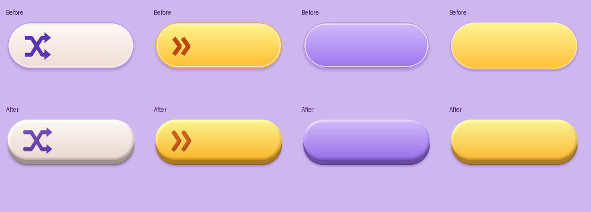
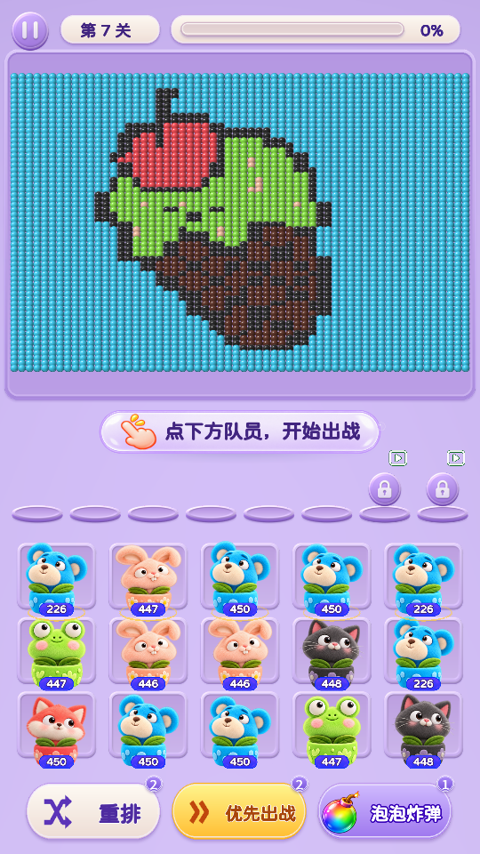
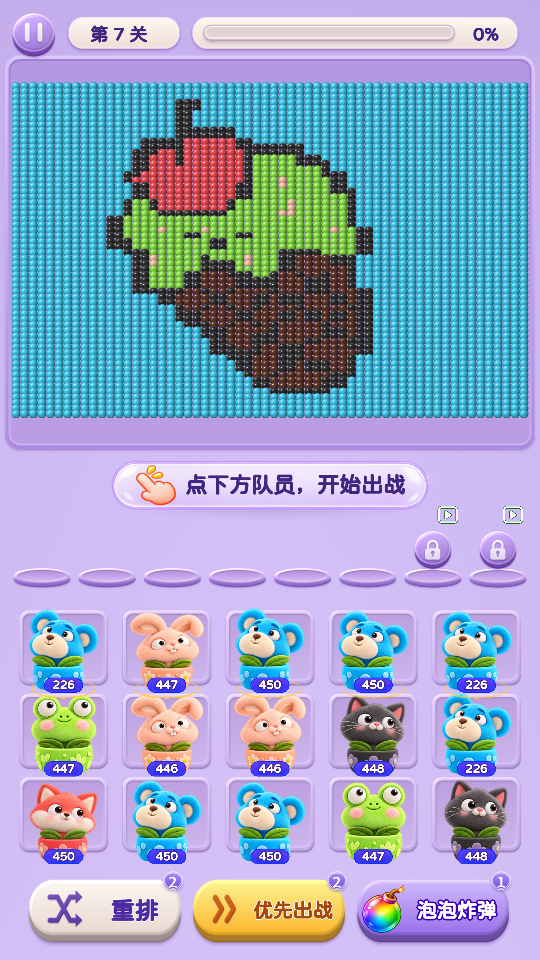
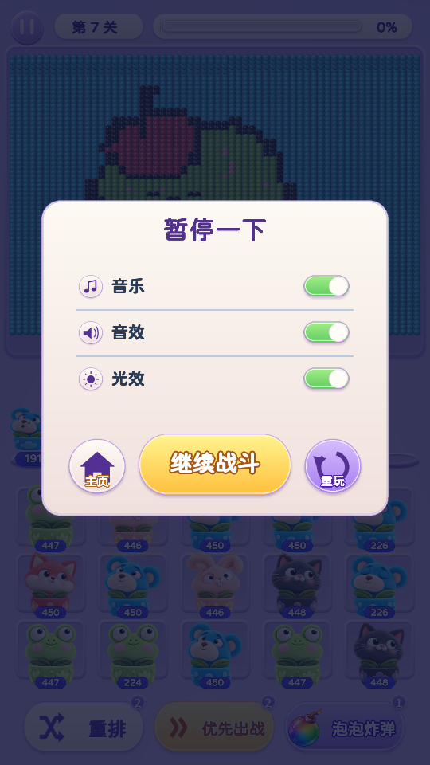
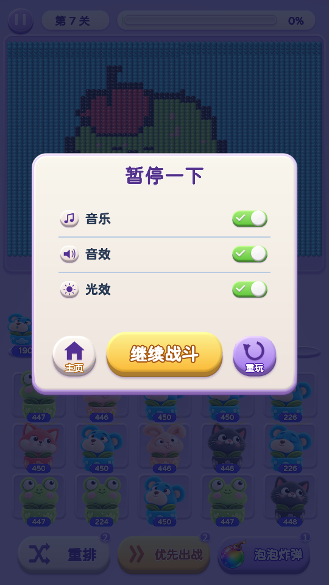

弹框与关卡按钮 · 厚底和投影
按参考图的比例增加约 10% 按钮高度的实体下沿，预留约 5.5% 的下方投影空间。保持奶油白、暖黄色和薰衣草紫配色，并将图标与文字居中到上层按钮面。
试玩第 3 关 · 首页设置
通用按钮底座：上方修改前，下方修改后

关卡页底部按钮
修改前
修改后
暂停弹框
修改前
修改后 · 主页、重玩图标已与文字留开间距
设置与复活按钮
长屏比例 · 390 × 844
最终本地构建：2026-10-23 19:20:49。复活截图来自 19:16:39 构建；随后仅调整了主页与重玩两枚图标的文字留白。保留毛绒角色、关卡玩法、卡槽位置和点击区域。